Table of Contents
- Author(s) of this documentation:\n Marion Foare and Jacques-Olivier Lachaud
Part of tool Image processing.
- related tools: imageProcessing/at-u2-v0, imageProcessing/atv-u2-v0, imageProcessing/at-u0-v1
- related classes: DGtal::ATu0v1, DGtal::ATu2v0, DGtal::ATVu2v0, DGtal::DECImage2D
- related namespace: DGtal::functions::dec
- related functions: DGtal::functions::dec::diagonal, DGtal::functions::dec::squares, DGtal::functions::dec::squaredDiagonal, DGtal::functions::dec::writePixel, DGtal::functions::dec::writePrimalLinel, DGtal::functions::dec::writeDualLinel, DGtal::functions::dec::form2ToImage, DGtal::functions::dec::form1ToImage, DGtal::functions::dec::dualForm1ToImage, DGtal::functions::dec::primalForm1ToImage, DGtal::functions::dec::threeForms2ToImage, DGtal::functions::dec::form2ToGreyLevelImage, DGtal::functions::dec::primalForm1ToGreyLevelImage, DGtal::functions::dec::dualForm1ToGreyLevelImage, DGtal::functions::dec::primalForm1ToRGBColorImage, DGtal::functions::dec::dualForm1ToRGBColorImage, DGtal::functions::dec::threeForms2ToRGBColorImage.
The Ambrosio-Tortorelli functional <br>
The Ambrosio-Tortorelli functional is a classical relaxation of the Mumford-Shah functional.
Given an input grayscale image, defined in an open bounded domain \( \Omega \), we represent its gray levels by a function \( g \in L^{\infty}(\Omega) \). In the Ambrosio-Tortorelli functional [1], one wants to find a function \( u \in SBV(\Omega) \) which is a smooth approximation of the input image \( g \). The Ambrosio-Tortorelli functional [1] is defined by
\[ \displaystyle AT_{\varepsilon}(u,v) = \int_\Omega \alpha |u-g|^2 + v^2 |\nabla u|^2 + \lambda \varepsilon |\nabla v|^2 + \frac{\lambda}{4 \varepsilon} |1-v|^2 dx, \]
for functions \( u,v \in W^{1,2}(\Omega)\) with \( 0 \leq v \leq 1 \).
In AT functional, function \( v \) is a smooth approximation of the set of discontinuities, and takes value close to 0 in this set, while being close to 1 outside discontinuities. A remarkable property of this functional is that it \( \Gamma \)-converges to (a relaxation of) MS functional as \( \varepsilon \) tends to 0 (see [1]). The intuition is that a large \( \varepsilon \) induces a solution with a fuzzy set of discontinuities, which is then progressively narrowed to the crisp 1-dimensional set of discontinuites as \( \varepsilon \) goes to 0.
Discretization of AT with discrete calculus
Discrete Calculus
The idea is to decompose the image domain \( \Omega \) into a cell complex K. Here, the faces of K are simply the pixels of the image, the edges of K are the sides shared by two pixels, while the vertices of K are the vertices shared by four pixels. For technical reasons, the dual complex K' of K is also needed and is defined in the usual way: a vertex of K is thus associated one-to-one to a face of K', etc. A discrete \( k \)-form is a map that associates a scalar to a \( k \)-dimensional cell. If the number of \( k \)-dimensional cells of K is denoted by \( n_k \), then a discrete \( k \)-form is simply represented by a column vector of size \( n_k \times 1 \).
We denote by \( \mathbf{d_k} \) and \( \bar{\mathbf{d_k}} \) the standard discrete exterior primal and dual derivative operators. The derivative operator \( \mathbf{d_0} \) is the oriented vertex-edge incidence matrix of K. Similarly, the primal derivative \( \mathbf{d_1} \) is the oriented edge-face incidence matrix of K.
Discrete Hodge star operators \( \mathbf{\star} \) send \( k \)-forms of the primal complex K onto \( (n-k) \)-forms of the dual complex K'. Of course, there are dual Hodge star operators \( \bar{\mathbf{\star}} \) which send \( k \)-forms of the dual complex K' onto \( (n-k) \)-forms of the primal complex K'. The composition of \( \mathbf{\star} \) with its dual \( \bar{\mathbf{\star}} \) is idempotent except for a sign change in some cases, i.e. \( \bar{\mathbf{\star}} \mathbf{\star} = (-1)^{k(n-k)} \mathbf{Id} \).
We define \( \mathbf{M} \) the matrix which transforms a 0-form into a 1-form by averaging the values on the two edge extremities, i.e. \( \mathbf{M} = \frac{1}{2} |\mathbf{d_0}| \). Moreover, we use the edge laplacian defined in [5] by \( \bar{\mathbf{\star}} \bar{\mathbf{d_0}} \mathbf{\star} \mathbf{d_1} + \mathbf{d_0} \bar{\mathbf{\star}} \bar{\mathbf{d_1}} \mathbf{\star} \).
Formulations AT01 and AT20
We first set \( u \) and \( g \) to live on the faces and \( v \) to live on the vertices and edges. Pixels are faces, so functions \( u \) and \( g \) are 2-forms since they represent the gray levels of each pixel. On the contrary, we set \( v \) in-between cells of non null measure, so in this case on vertices as a 0-form, and on edges by averaging with \( \mathbf{M} \). We call this formulation AT20. The DEC reformulation is straightforward, except for the second term, where we use matrix \( \mathbf{M} \) to transport the 0-form \( v \) onto edges :
\[ \displaystyle AT20(u,v) = \Sigma_{i=1}^n \alpha \langle u_i - g_i , u_i - g_i \rangle_2 + \langle \mathbf{M} v , \bar{\mathbf{\star}} \bar{\mathbf{d_0}} \mathbf{\star} u_i \rangle_1 ^2 \\ + \lambda \varepsilon \langle \mathbf{d_0} v , \mathbf{d_0} v \rangle_1 + \frac{\lambda}{4\varepsilon} \langle 1 - v , 1 - v \rangle_0. \]
A second possibility is to define \( u \) and \( g \) on the vertices and \( v \) on the edges. We denote this formulation AT01. Gray levels are seen as point mass on the center of pixels, so that functions \( u \) and \( g \) are both 0-forms, while \( v \) is a dual 1-form in between \( u \). It follows:
\[ \displaystyle AT01(u,v) = \Sigma_{i=1}^n \alpha \langle u_i - g_i , u_i - g_i \rangle_0 + \langle v , \mathbf{d_0} u_i \rangle_1 \langle v , \mathbf{d_0} u_i \rangle_1 \\ + \lambda \varepsilon \langle (\mathbf{d_1} + \bar{\mathbf{\star}} \bar{\mathbf{d_1}} \mathbf{\star}) v , (\mathbf{d_1} + \bar{\mathbf{\star}} \bar{\mathbf{d_1}} \mathbf{\star}) v \rangle_1 + \frac{\lambda}{4\varepsilon} \langle 1 - v , 1 - v \rangle_1. \]
For more details about discrete formulations and numerical optimizationf of AT, we refer the reader to [2] and [3].
Solutions to AT01 and AT20
Functionals AT20 and AT01 are both sums of quadratic terms, independently, but not simultaneously, convex in \( u \) and \( v \). They must have null derivative at optimum. We thus propose to alternatively solve for \( u \), then \( v \). The derivatives can be given explicitly as linear systems. To simplify notations, let \( \mathbf{A} := \mathbf{d_0} \), \( \mathbf{B} := \mathbf{d_1} \), \( \mathbf{A'} := \bar{\mathbf{\star}} \bar{\mathbf{d_1}} \mathbf{\star} \) and \( \mathbf{B'} := \bar{\mathbf{\star}} \bar{\mathbf{d_0}} \mathbf{\star} \). We get at optimum:
\[ \displaystyle \left\{ \begin{array}{r @{=} l c} \left[\alpha \mathbf{Id} - {\mathbf{B'}}^T diag(\mathbf{M} v)^2 \mathbf{B'} \right] u & = \quad \alpha g & (1.1) \\ \left[ \frac{\lambda}{4\varepsilon} \mathbf{Id} + \lambda \varepsilon \mathbf{A}^T \mathbf{A} + \mathbf{M}^T diag(\mathbf{B'} u)^2 \mathbf{M} \right] v & = \quad \frac{\lambda}{4 \varepsilon} \mathbf{1} & (1.2) \end{array}\right. \]
for the derivative of AT20, and
\[ \displaystyle \left\{ \begin{array}{r @{=} l c} \left[\alpha \mathbf{Id} - \mathbf{A}^T diag(v)^2 \mathbf{A} \right] u & = \quad \alpha g & (2.1) \\ \left[ \frac{\lambda}{4\varepsilon} \mathbf{Id} + \lambda \varepsilon (\mathbf{A'}^T \mathbf{A'} + \mathbf{B}^T \mathbf{B}) + diag(\mathbf{A} u)^2 \right] v & = \quad \frac{\lambda}{4 \varepsilon} \mathbf{1} & (2.2) \end{array}\right. \]
for the derivative of AT01. Since all matrices are symmetric, definite and positive, we use a Cholesky factorization to solve alternatively the two equations of each system.
Algorithm
\( \begin{array}{l l l l} \rlap{OPTIMIZE-AT01( (g_1, ..., g_N ): 0-forms, (\alpha, \lambda, \varepsilon_1, \varepsilon_2, \varepsilon_r): reals );} \\ \rlap{\mathbf{Var~} (u_1, ..., u_N): 0-forms, (v, v'): 1-forms, \varepsilon: real ; } \\ \rlap{\mathbf{begin}} & \\ & \rlap{\mathbf{foreach~} i \in \{1, 2, 3\} \mathbf{~do~} u_i \leftarrow g_i;} \\ & \rlap{v \leftarrow 1, \varepsilon \leftarrow \varepsilon_1;} \\ & \rlap{\mathbf{while~} \varepsilon \geq \varepsilon_2 \mathbf{~do~}} \\ & & \rlap{\mathbf{repeat}} \\ & & & v' \leftarrow v; \\ & & & \hbox{Solve Eq.(1.1) for all } u_i ; \\ & & & \hbox{Solve Eq.(1.2) for } v ; \\ & & \rlap{\mathbf{until~} ||v - v'|| \hbox{~is small;}} \\ & & \rlap{\varepsilon \leftarrow \varepsilon / \varepsilon_r;} \\ & \rlap{\mathbf{end}} \\ \rlap{\mathbf{end}} \end{array} \)
Piecewise smooth approximation of images
Some examples of restoration and discontinuity detections
We display below the different resconstructions of image "lena" with approximately 20% noise, for varying parameter \( \lambda \). Note that a too big \( \lambda \) gives a fuzzy result, while a too small \( \lambda \) keeps noise.
| Input g | |||||
| Approx. u | 
|
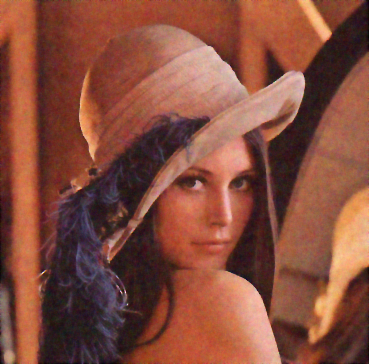
|
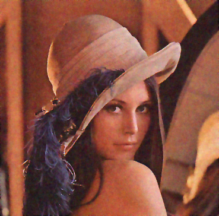
|
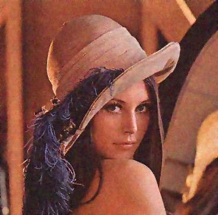
| |
| \( \alpha = 0.48, \varepsilon = 4 \searrow 0.25 \) | \( \lambda = 0.2 \) | \( \lambda = 0.1 \) | \( \lambda = 0.05 \) | \( \lambda = 0.025 \) | \( \lambda = 0.0125 \) |
Our approach allows us to restore images with texture, as illustrated below on image "barbara" with noise approximately 10%.
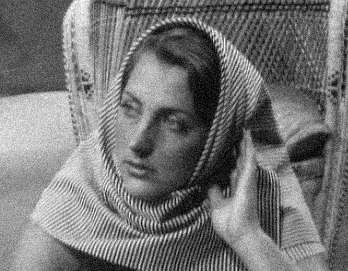
| 
|
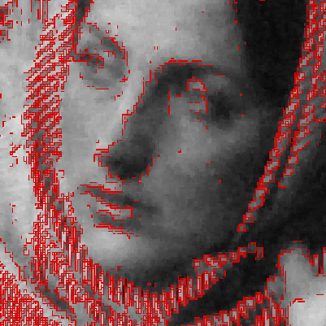
| 
|
| Input image g | Approx. u with AT20 and AT01 | u and v with AT20 | u and v with AT01 |
| Command line are: | ./imageProcessing/at-u2-v0 -i ../imageProcessing/Images/barbara-cropped-b01.pgm -o barbara -a 1.0 --lambda 0.0054 --epsilon-1 2.0 --epsilon-2 0.25
./imageProcessing/at-u0-v1 -i ../imageProcessing/Images/barbara-cropped-b01.pgm -o barbara -a 0.69 --lambda 0.0065 --epsilon-1 2.0 --epsilon-2 0.25
| ||
Influence of parameter epsilon

|
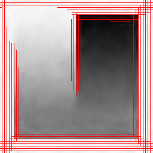
|
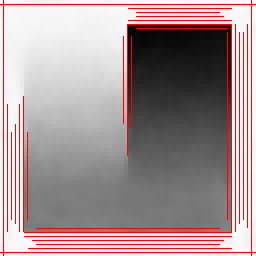
|
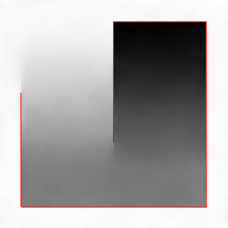
| 
| 
|
| Input image g | \( \varepsilon = 4 \searrow 4 \) | \( \varepsilon = 4 \searrow 2 \) | \( \varepsilon = 4 \searrow 1 \) | \( \varepsilon = 4 \searrow 0.5 \) | \( \varepsilon = 4 \searrow 0.25 \) |
| Command lines are: | ./imageProcessing/at-u0-v1 -i ../imageProcessing/Images/carre2Degradesb02.pgm -o cb2 -a 0.1 --lambda 0.006 --epsilon-1 4.0 --epsilon-2 4.0
./imageProcessing/at-u0-v1 -i ../imageProcessing/Images/carre2Degradesb02.pgm -o cb2 -a 0.1 --lambda 0.006 --epsilon-1 4.0 --epsilon-2 2.0
./imageProcessing/at-u0-v1 -i ../imageProcessing/Images/carre2Degradesb02.pgm -o cb2 -a 0.1 --lambda 0.006 --epsilon-1 4.0 --epsilon-2 1.0
./imageProcessing/at-u0-v1 -i ../imageProcessing/Images/carre2Degradesb02.pgm -o cb2 -a 0.1 --lambda 0.006 --epsilon-1 4.0 --epsilon-2 0.5
./imageProcessing/at-u0-v1 -i ../imageProcessing/Images/carre2Degradesb02.pgm -o cb2 -a 0.1 --lambda 0.006 --epsilon-1 2.0 --epsilon-2 0.25
| ||||
Influence of parameter alpha
|
| 
|
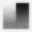
| 
|
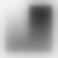
| 
|
| \( \lambda = 1.0, \epsilon = 2 \searrow 0.25 \) | \( \alpha = 1.0 \) | \( \alpha = 0.5 \) | \( \alpha = 0.1 \) | \( \alpha = 0.05 \) | \( \alpha = 0.01 \) |
| Command lines are: | ./imageProcessing/at-u0-v1 -i ../imageProcessing/Images/carre2Degradesb02.pgm -o cb2 -a 1.0 --lambda 1.0 --epsilon-1 2.0 --epsilon-2 0.25
./imageProcessing/at-u0-v1 -i ../imageProcessing/Images/carre2Degradesb02.pgm -o cb2 -a 0.5 --lambda 1.0 --epsilon-1 2.0 --epsilon-2 0.25
./imageProcessing/at-u0-v1 -i ../imageProcessing/Images/carre2Degradesb02.pgm -o cb2 -a 0.1 --lambda 1.0 --epsilon-1 2.0 --epsilon-2 0.25
./imageProcessing/at-u0-v1 -i ../imageProcessing/Images/carre2Degradesb02.pgm -o cb2 -a 0.05 --lambda 1.0 --epsilon-1 2.0 --epsilon-2 0.25
./imageProcessing/at-u0-v1 -i ../imageProcessing/Images/carre2Degradesb02.pgm -o cb2 -a 0.01 --lambda 1.0 --epsilon-1 2.0 --epsilon-2 0.25
| ||||
Influence of parameter lambda
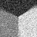
| 
| 
|
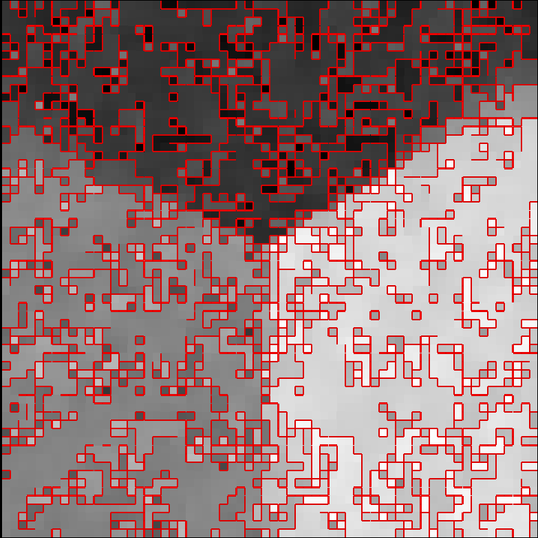
| |
| Input image g | \( \lambda = 0.1 \) | \( \lambda = 0.01 \) | \( \lambda = 0.0048 \) | \( \lambda = 0.0011 \) |
| Command lines are: | ./imageProcessing/at-u0-v1 -i ../imageProcessing/Images/triple-spirale-b02.pgm -o tb2 -a 0.162 --lambda 0.1 --epsilon-1 1.0 --epsilon-2 0.25
./imageProcessing/at-u0-v1 -i ../imageProcessing/Images/triple-spirale-b02.pgm -o tb2 -a 0.162 --lambda 0.01 --epsilon-1 1.0 --epsilon-2 0.25
./imageProcessing/at-u0-v1 -i ../imageProcessing/Images/triple-spirale-b02.pgm -o tb2 -a 0.162 --lambda 0.0048 --epsilon-1 1.0 --epsilon-2 0.25
./imageProcessing/at-u0-v1 -i ../imageProcessing/Images/triple-spirale-b02.pgm -o tb2 -a 0.162 --lambda 0.0011 --epsilon-1 1.0 --epsilon-2 0.25
| |||
Use of AT models for inpainting
The AT20 model is much superior to the AT01 model for inpainting since it is less sensitive to L1-metrication artefacts. Indeed, for large \( \varepsilon \), the discontinuity set is averaged along points, not along edges. Hence AT20 is smoothed in all directions while AT01 is smoothed along axes. This is illustrated on the inpainting quadruple angle below. AT01 finds the solution in the L1-metric sense for the length of discontinuities, while AT20 finds the correct two triple points in the L2-metric sense.

| ||
| Input g + mask | Inpainted u with AT01 | Inpainted u with AT20 |
| Command lines are: | ./imageProcessing/at-u0-v1 -i ../imageProcessing/Images/quadruple-color.ppm -o q -m ../imageProcessing/Images/mask-big-disc.pgm -a 1.0 --lambda 0.01 --epsilon-1 4.0 --epsilon-2 0.25
./imageProcessing/at-u0-v1 -i ../imageProcessing/Images/quadruple-45-color.ppm -o q -m ../imageProcessing/Images/mask-disc.pgm -a 1.0 --lambda 0.025 --epsilon-1 4.0 --epsilon-2 0.25
./imageProcessing/at-u2-v0 -i ../imageProcessing/Images/quadruple-color.ppm -o q -m ../imageProcessing/Images/mask-big-disc.pgm -a 1.0 --lambda 0.01 --epsilon-1 4.0 --epsilon-2 0.25
./imageProcessing/at-u2-v0 -i ../imageProcessing/Images/quadruple-45-color.ppm -o q -m ../imageProcessing/Images/mask-disc.pgm -a 1.0 --lambda 0.025 --epsilon-1 4.0 --epsilon-2 0.25
| |
A variant for AT model
Following ideas from Elie Bretin and Simon Masnou (Institut Camille Jordan), it is possible to approximate the Hausdorff 1-measure of singularities using the Laplacian of v instead of its gradient. The functional becomes:
\[ \displaystyle AT_{\varepsilon}(u,v) = \int_\Omega \alpha |u-g|^2 + v^2 |\nabla u|^2 + c \lambda \varepsilon |\Delta v|^2 + c \frac{\lambda}{\varepsilon} |1-v|^2 dx, \]
It \( \Gamma \)-converges to a length estimation multiplied by \(2 \sqrt{2}\), while having a smoother profile than the standard AT. The constant c is set to \(1/(2 \sqrt{2})\) to correct this estimation and to keep the same parameterization as AT.
In ATV functional, function \( v \) is a smooth approximation of the set of discontinuities, and takes value close to 0 in this set, while being close to 1 outside discontinuities. A remarkable property of this functional is that it \( \Gamma \)-converges to (a relaxation of) MS functional as \( \varepsilon \) tends to 0 (see [1]). The intuition is that a large \( \varepsilon \) induces a solution with a fuzzy set of discontinuities, which is then progressively narrowed to the crisp 1-dimensional set of discontinuites as \( \varepsilon \) goes to 0.
We discretize ATV with discrete calculus and we set \( u \) and \( g \) to live on the faces and \( v \) to live on the vertices and edges. Pixels are faces, so functions \( u \) and \( g \) are 2-forms since they represent the gray levels of each pixel. On the contrary, we set \( v \) in-between cells of non null measure, so in this case on vertices as a 0-form, and on edges by averaging with \( \mathbf{M} \). We call this formulation ATV20. The DEC reformulation is straightforward, except for the second term, where we use matrix \( \mathbf{M} \) to transport the 0-form \( v \) onto edges :
\[ \displaystyle ATV20(u,v) = \Sigma_{i=1}^n \alpha \langle u_i - g_i , u_i - g_i \rangle_2 + \langle \mathbf{M} v , \bar{\mathbf{\star}} \bar{\mathbf{d_0}} \mathbf{\star} u_i \rangle_1 ^2 \\ + c \lambda \varepsilon \langle \mathbf{L_0} v , \mathbf{L_0} v \rangle_1 + c \frac{\lambda}{4\varepsilon} \langle 1 - v , 1 - v \rangle_0. \]
Here is an example.
| Input image g | Reconstructed image ATV u | Reconstructed image TV u (for comparison) | Perfect image |
Input image (noise = 0.4) |
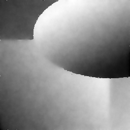
ATV20 alpha=0.05 lambda=0.0075 | 
AT20 alpha=0.05 lambda=0.0075 | 
Perfect image |
| SNR of g = 21.9183 | SNR of u = 34.3261 | SNR of u = 34.3655 | Perfect image |
- Note
- After some experiments, pratical results are very similar to
at-u2-v0. Timings are longer since \( | \Delta v |^2 \) induces less sparse matrices.
References
[1] Luigi Ambrosio, and Vincenzo Maria Tortorelli. "Approximation of functional depending on jumps by elliptic functional via \(\Gamma\)‐convergence." Communications on Pure and Applied Mathematics 43.8 (1990): 999-1036.
[2] Marion Foare, Jacques-Olivier Lachaud, and Hugues Talbot. "Image restoration and segmentation using the Ambrosio-Tortorelli functional and discrete calculus." In Proceedings of the IAPR International Conference on Pattern Recognition (ICPR2016), Cancun, Mexico, 2016.
[3] Marion Foare, Jacques-Olivier Lachaud, and Hugues Talbot. "Numerical implementation of the Ambrosio-Tortorelli functional using discrete calculus and application to image restoration and inpainting." In Proceedings of 1st Workshop on Reproducible Research In Pattern Recognition (RRPR 2016), Springer LNCS. To appear.
[4] Matteo Focardi. "On the variational approximation of free- discontinuity problems in the vectorial case." Mathematical Models and Methods in Applied Sciences 11.04 (2001): 663-684.
[5] Leo J. Grady and Jonathan Polimeni. Discrete calculus: Applied analysis on graphs for computational science . Springer, 2010.